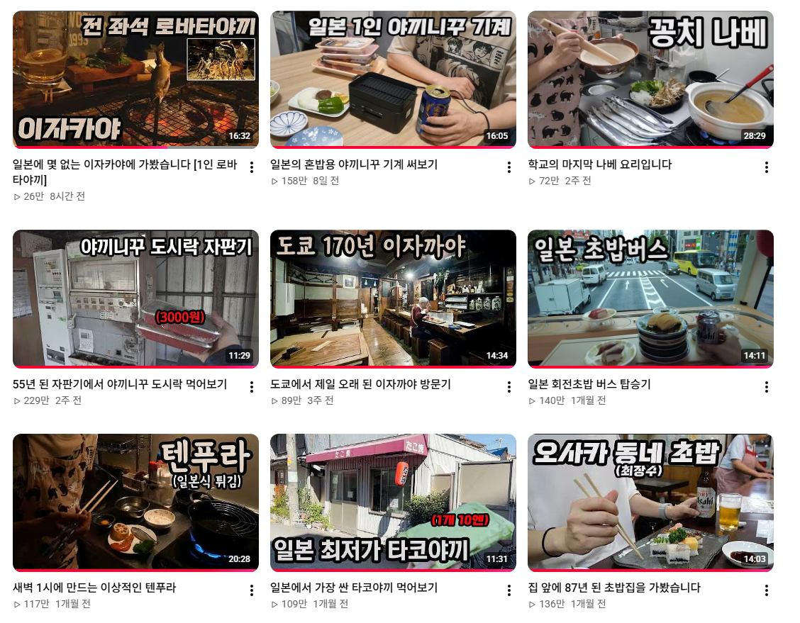

일본에서 낮에는 요리학교, 밤에는 식당일, 부업으로 유튜브하는 청년 유우키
구독자가 33.3만명인데

영상 조회수는 대부분 100만이 넘어간다.
올리지 하루도 안된 영상도 26만.
구독자 대비 조회수가 3~4배는 나오는중.
한국에서 무고로 미투당해서 고생했지만, 최근에 가해자 유죄 판결(여자 집유, 공범 실형)도 나왔고
채널도 잘되는거 같아서 흐뭇함.
이제는 수익화 했으려나?
일본에서 낮에는 요리학교, 밤에는 식당일, 부업으로 유튜브하는 청년 유우키
구독자가 33.3만명인데

영상 조회수는 대부분 100만이 넘어간다.
올리지 하루도 안된 영상도 26만.
구독자 대비 조회수가 3~4배는 나오는중.
한국에서 무고로 미투당해서 고생했지만, 최근에 가해자 유죄 판결(여자 집유, 공범 실형)도 나왔고
채널도 잘되는거 같아서 흐뭇함.
이제는 수익화 했으려나?
거대유튜버일수록 구독자 대비 조회수 안나오는 편임. 모든 구독자들이 해당 유튜버 영상을 보는건 아니잖아
영상을 보는 사람이 모두 구독을 누르는 것도 아니고.
유우키의 경우 구독자대비 조회수는 높은편이겠지만 그래도 30~40퍼대일거임
홍사운드라는 유튜버는 구독자가 180만인데 최근 조회수는 10만도 못넘김…
저정도면 진짜 잘나오는거 같음
저정도면 존나 잘 나오는거지
예전이나 지금이나 유튜브 수익만으로 먹고 살기 충분할텐데 쓰리잡 뛰면서 그 흔한 유료 광고 하나도 안 하는것부터 대호감임 광고가 나쁘다는 건 아니지만 그래서 유우키 영상 볼 때는 편안함이 있음
저런 잔잔한감성 좋음 ㅋㅋ 찐따감성이라고 말할수도있는데
군대시절떄랑 재수했을떄 일본을엄청가고싶었는데 돈도없고 그래서 대신에 세계지리 공부하고 재수떈1등급도 처음맞아보고 네셔널 잡지사서 보고그래서 미루다미루다 30살에 처음가봤음 저기나온곳도 가보고
그떄 대리만족하는 느낌이라 좋았음
일본 가는 대신 세계지리 공부를 했다고??
이거이거 사랑을 하다보니 세계를 구원할 사람일세...
재수하면서 어차피선택과목이여서 ㅋㅋㅋ
여자는 집유 공범은 실형 ㅋㅋㅋ
나도 이거 듣고 개 빠겠음 ㅋㅋㅋㅋㅋ어이가 없어서 ㅋㅋㅋ
왜? 평범한 한국인데
얼마인지는 몰라도 합의를 했으니 집유 나오는건 정상임
뭐 근데 그와중에 공범은 실형나온거 보면 집유중에 재범인 모양일테고
쓰리잡하는거 진짜 대단함 요리학교 전에는 식당일+대리기사+유투브
얘가 원래 유키마츠 인가 걔 였다는거 알고 좀...
유키마츠가 뭔데그래?
왜 유키마츠때 뭐 있었음?
영상엔 착한 청년 처럼 나오는데 실상은 지인들이랑 욕설이랑 음담패설 주로 한다고 그걸 본인 스스로 까발리고 채널 삭제한뒤 다시 만듬
대처도 깔끔하고 뭐 그렇게 나쁘게 볼것만은 아닌거 같은데
• 성적인 대화 및 사진 요구 의혹. 당시 페이스북 메시지(페메) 등 SNS를 통해 여성 구독자나 팬들에게 성적인 대화를 걸거나 특정 신체 사진을 요구했다는 폭로가 제기되었습니다.
‘유키마츠’ 시절 폭로가 나왔을 당시 온라인에서 가장 거센 비판을 받았던 지점이 ‘미성년자 포함 의혹’이었습니다.
이 사안이 왜 큰 충격을 주었는지, 그리고 사실관계의 경계가 어디까지인지 핵심만 정리해 드립니다.
1. 논란이 커진 이유
• 팬심을 이용한 접근. 유키마츠 채널의 주 시청자층에 어린 학생 팬들이 다수 포함되어 있었기 때문에, 크리에이터라는 지위를 이용해 미성년자에게까지 사적인 연락과 부적절한 요구를 했다는 폭로는 대중에게 큰 배신감과 충격을 안겼습니다.
• 일관된 패턴에 대한 실망. 단순한 말실수가 아니라 여러 여성 구독자에게 비슷한 방식으로 접근했다는 정황이 언급되면서, 친근하고 건전한 이미지와 극명하게 대비되어 타격이 매우 컸습니다.
2. 사실 확인의 한계점
• 커뮤니티 폭로 vs 공식 확인. 당시 온라인 커뮤니티를 중심으로 피해 주장 글과 캡처 일부가 확산되며 '미성년자 팬도 있었다'는 이야기가 기정사실처럼 퍼졌습니다.
• 미확인 상태 유지. 다만 유우키 본인은 부적절한 메시지 논란 전반에 대해 "과거 철없고 어리석게 행동했다"며 포괄적으로 사과하고 채널을 닫았을 뿐, 상대방 중 실제로 미성년자가 있었는지 여부에 대해서는 법적 판단이나 공식적인 사실 확인이 이루어진 적이 없습니다.
당시 폭로 원문이나 구체적인 신상 자료들이 채널 폐쇄와 함께 사라지면서 현재는 구설수의 형태로만 남아 있지만, 대중이 유우키의 과거 행적과 SNS 소통 방식에 유독 엄격하고 회의적인 시선을 거두지 못하는 가장 결정적인 이유이기도 합니다.
2025년 초 발생한 성추행 무고 및 협박 사건 역시 결과적으로 유우키가 인스타그램 DM을 통해 여성과 사적으로 연락하고, 실제로 오프라인에서 만남을 가지면서 비롯된 일입니다.
과거 '유키마츠' 시절에 겪었던 논란의 방식이 수년이 흐른 뒤에도 형태만 달리해 재연되었다는 점에서, 대중과 팬들 사이에서도 비슷한 지적이 꾸준히 나왔습니다.
1. 사건의 발단과 경과
• SNS를 통한 사적 접촉. 유우키는 2024년 말경 인스타그램 DM을 통해 한 한국인 여성과 연락을 주고받기 시작했고, 이후 오프라인에서 직접 만나 술자리를 가졌습니다.
• 무고 및 협박으로의 비화. 만남 이후 해당 여성은 유우키에게 성추행을 당했다며 거액의 합의금을 요구하고, 이를 들어주지 않으면 사생활(취중 모습, 개인 연락 등)을 폭로하겠다고 협박했습니다. 수사 및 재판 결과 여성의 주장은 허위(무고 및 공갈미수 등)로 밝혀졌지만, 이 과정에서 과거 유키마츠 시절의 논란까지 다시 소환되며 유우키는 엄청난 이미지 타격을 입고 120만 채널을 삭제했습니다.
2. '학습 효과 부재'에 대한 비판적 시각
• 동일한 리스크 반복. 첫 번째 채널(유키마츠)을 잃었을 때의 핵심 원인이 'SNS를 통한 이성 팬·구독자와의 부적절한 사적 소통'이었음에도, 대형 유튜버로 성장한 뒤에도 여전히 SNS로 일반인과 사적인 만남을 이어갔다는 점은 안일한 처신이라는 비판을 피하기 어려웠습니다.
• 본인의 뒤늦은 후회. 유우키 본인 역시 사건 직후 올린 입장문에서 "스스로 경솔했고 안일하게 행동한 제 잘못이 크다"며, 과거의 뼈아픈 경험이 있었음에도 경계심을 늦추고 사적인 연락과 만남을 가졌던 것에 대해 깊이 자책하는 모습을 보였습니다.
이 때문에 법적으로는 명백한 무고 피해자임이 입증되었음에도, 일각에서는 "결국 스스로 화를 부른 측면이 있다", "SNS 소통 방식을 고치지 못하면 또다시 비슷한 구설에 휘말릴 수 있다"는 냉정한 시선이 여전히 남아 있는 상황입니다.
일본 오래 살면서 피부로 느끼는 거지만 한국도 음지는 또이또이하다해도 체감되는 보편적인 문화가 많이 다름..
우리나라 정조 관념이나 윤리관을 갖다 대면 꽤 충격적인 부분이 없잖아 있음 ㅋㅋ
찾아보니까 그렇네
찾아보고왔는데 놀랍긴하네
잘 사는거같아서 보기좋네
채널 터뜨렸다 했던거 같은데 다른사람이었나
같은 사람임. 복귀한거
지금 조회수 뻥튀기돼서 실조회수는 반토막 내지는 3할정도라며
맞음 나도 유튜브 하는데 대충 8월말 이후부터는 기존 3분의 1로 잡으면 되긴 함 그래도 저 사람은 한달에 몇백은 쉽게 벌듯
부럽당
저채널은 잔잔해서 밥먹을때 틀어놓으면 끝까지 보게됨 채널터졌을때 ㅈㄴ 안타까웠음
나한테도 알고리즘으로 뜬거 봤는데
딱히 재밌는 소스는 없던데 신기하네
일본가서 살고 싶은 사람들이 많다는 증거인가보네
일본 가서 살고 싶다 보다는 덜 자극적이어서 선호하는 사람이 많음.
브이로그 채널류들은 한눈에 재밌는거 보다는 소소하게 사람 살아가는거 보는거에 흥미를 느끼는 사람들이 더 많음.
슴슴한맛인데 이렇게 제작하는 유튜버가 생각보다 적음
판결이 나왔구나
저거 뻥조야..
걍 썸네일 마우스로 슥 스쳐지나가서 0.1초라도 썸네일 플레이되면 조회수 카운팅 됨
실제 조회수는 20~30만 정도 됨.
정작 미투한 당사자는 성인영상 찍고 있고
사건 터졌는데도 ㅇㅎㅅㅇ 오나홀 산새끼들은 ㅈ 떼라 진짜
내밥친구임!
한녀랑 한국 병신법만 아니었어도 진짜 ㅠㅠ 하 이젠 이민 안가고 한녀랑 엮이는게 병신
원래 100만 유튜버인데 채널 삭제하고 나서 다시 만든게 33만인거임
뻥튀기 전에도 조회수 100만 계속 나왔음
아직 다시 유튜버 한지 모르는 사람도 많을테지
심심한 브이로그류 1황임 ㅋㅋ 순한
유튜브 최근의 업데이트해서
릴스 틱톡따라갈려고 영상 1초 보기만해도 조회수 체크해버림.
그래서 지금 모든 유튜브영상 조회수 3~4배 된게 영향이 갔을거임.[단, 수익은 그대로]
그거랑 별개로 유우키는 조회수 잘나오기도하고
잠은 언제 자는 건가 싶던데
보통 조회수가 구독자수의 몇 배 되지 않나? 영상들 보면 구독자수가 10% 20%밖에 안돼요 구독부탁드립니다 이런거 흔하던데